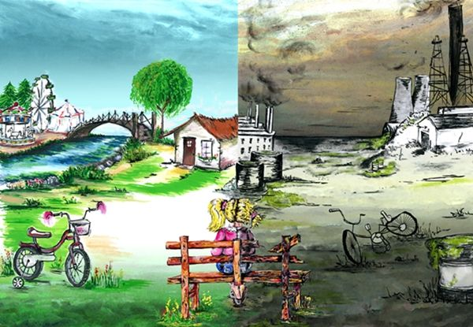

Contaminacion En Mi Ciudad
Contaminacion En Mi Ciudad

Un Mundo Mejor

La contaminación es un concepto muy sonado y seguramente sabrás a qué hace referencia. Este va más allá de la basura que tiras como desperdicio doméstico, de hecho, cubre todo tipo de medios.
Según la Real Academia Española “contaminación” es la acción y efecto de contaminar. Este último significa “alterar nocivamente la pureza o las condiciones normales de una cosa o un medio por agentes químicos o físicos”. El medio puede ser un ecosistema, un lugar o un ser vivo y el contaminante cualquier sustancia química o energética. Por ejemplo, derramar en un parque (medio) unos litros de detergente (sustancia). En general, el resultado de esta alteración es negativa y usualmente es producida por la actividad humana.
tipo de contaminación que surge de la liberación de partículas de sustancias químicas a la atmósfera.
Se trata del efecto de la emisión y liberación en las aguas de sustancias contaminantes. Se dificulta o altera la vida y el uso normativo, haciéndola no potable.
Provocada por la filtración de sustancias en el suelo, genera alteraciones físicas y químicas en éste que hacen que por ejemplo resulte inhabitable, se contaminen las aguas subterráneas o se imposibilite el crecimiento de vida en el área.
Es producida por la liberación de material radiactivo y tiene efecto en cualquier superficie. Suele derivarse de la acción humana, como el vertido de residuos o desastres en plantas de energía nuclear como el de Chernobyl.
Uno de los tipos de contaminación menos conocidos, es generado por el cambio de temperatura en el entorno o en diferentes medios debido a la actividad humana.
se refiere a los cambios visuales que se producen en la naturaleza debido a la actividad humana.
Se trata de uno de los tipos de contaminación en la que el elemento contaminante es visual. la contaminación lumínica el elemento contaminante en sí es la emisión de luz fuera de lo que sería natural, provocando problemas como la pérdida de orientación o los cambios en los biorritmos tanto de seres humanos como de otros animales.
Denominamos contaminación acústica a la emisión de sonido en una proporción, frecuencia, tono, volumen y ritmo excesivos que provocan una alteración en el medio o en los seres que lo habitan.
Aunque tal ves no es tan perceptible de manera directa por los seres humanos, se refiere a la contaminación derivada del uso de elementos eléctricos o que generen fenómenos electromagnéticos.
Se refiere a la presencia de diferentes sustancias en los alimentos que provocan efectos de diferente envergadura en quienes lo consumen. Por ejemplo, la contaminación del pescado por el mercurio proveniente de la contaminación hídrica o la provocada por la venta de alimentos en mal estado o infectados de alguna enfermedad.
las consecuencias se siguen viendo, empeoran y más se destruyen los hábitats naturales que un día hicieron de este planeta un planeta verde y azul de envidiar por muchos
la contaminación hace que las personas estemos cada vez más expuestas a padecer problemas cardiovasculares, con el grave peligro que esto entraña para nuestra salud y vida.
la capa de ozono es la que nos protege de los rayos del Sol, los cuales pueden llegar a ser mortíferos sin esta capa. la consecuencia de este debilitamiento es que cada vez nos protege menos y, por ende, cada vez tenemos una mayor temperatura en el planeta.
la contaminación al medio ambiente afecta al agua y al suelo, lo que hace que cada vez haya más especies en peligro de extinción. El agua no es potable en una gran cantidad de sitios y el suelo para la siembre no tiene los nutrientes necesarios
seguro que ya te has dado cuenta que los inviernos pueden ser mucho más fríos o que los veranos son mucho más calurosos, a la vez que seguro te has dado cuenta que las estaciones como la Primavera Verano y el verano pueden ser más largas y que las de temperaturas medias, son cada vez más cortas.
El reciclaje consiste en obtener una nueva materia prima o producto, mediante un proceso fisicoquímico o mecánico, a partir de productos y materiales ya en desuso o utilizados. De esta forma, conseguimos alargar el ciclo de vida de un producto, ahorrando materiales y beneficiando al medio ambiente al generar menos residuos.El reciclaje surje no sólo para eliminar residuos, sino para hacer frente al agotamiento de los recursos naturales del planeta.
Todo este proceso del reciclaje, pasa por varias fases: El reciclaje comienza en entornos industriales y domésticos, mediante la separación de los materiales. El siguiente paso consiste en la recuperación de estos materiales por las empresas públicas y privadas y su posterior traslado a las plantas de transferencia.
El reciclaje, al margen de su complejo proceso de transformación, es uno de los puntos básicos de estrategia de tratamiento de residuos 3R.
Acciones para reducir la producción de objetos susceptibles de convertirse en residuos.
Acciones que permiten el volver a usar un producto para darle una segunda vida, con el mismo uso u otro diferente.
El conjunto de operaciones de recogida y tratamiento de residuos que permiten reintroducirlos en un ciclo de vida.


 3
3
 3
3